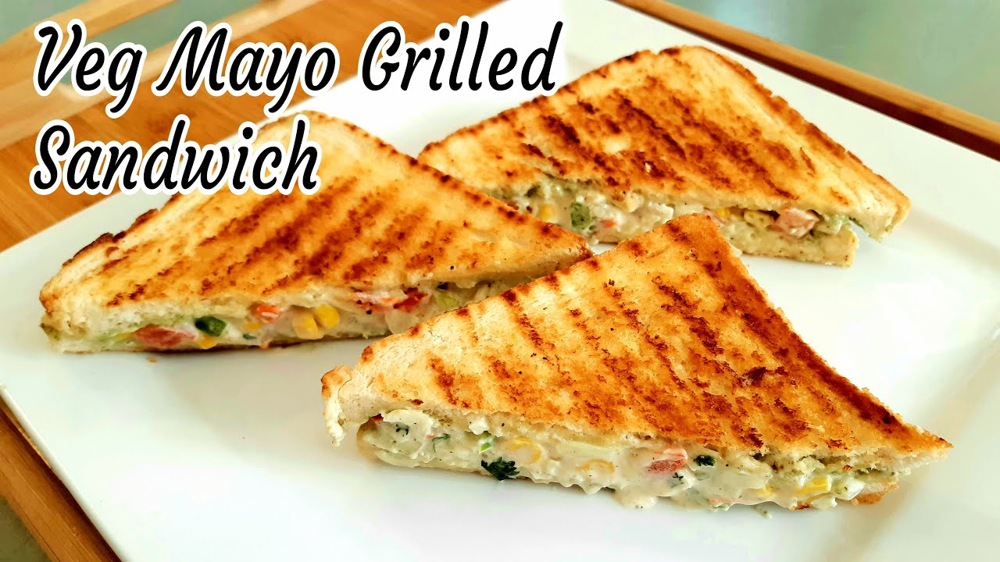

Veg Mayo Grilled Sandwich
Recipe by Mishan Goti
Servings
2 servings
Prep Time
10 Minutes
This sandwich may look pretty but it is also insanely healthy! As it has plenty of vegitables. It has the perfect balance of ingredients and looks great when made right.
Ingredients
- Finely chopped onion (half cup)
- Finely chopped capsicum (half cup)
- Finely chopped cabbage (half cup)
- Finely chopped carrot (half cup)
- Finely chopped green chillies (two tablespoon)
- Finely chopped coriander (two tablespoon)
- Mayonise (3 tablespoon)
- Solt (according to test)
- Black papper powder (according to test)
- butter
- Bread
Utensils
- One Bowl
- Knife
- Cutting Board
- Grill Machine
Directions
- Take one bowl and mix all six vegitables.
- Add Mayonnaise to the mixture
- Add solt and black papper (according to your test)
- Mix the mixture properly
- Take brades, do buttering on inner side of bread for two pieces.
- Now we will do stuffing on the bread and on the top of it put other piece of bread to make sandwich.
- Now we will put sandwich in grill machine, but before that do buttering both sides of the sandwich.
- After 6 to 8 minutes it will be ready.
- Now it is ready to serve in breakfast or as afternoon snack.
- Serve sandwich with tomato ketchup.
Nutritional Values
| Value Per Sandwich | % Daily Values | |
|---|---|---|
| Energy | 308 cal | 15% |
| Protein | 3.8g | 7% |
| Carbohydrates | 39.5g | 13% |
| Fiber | 0.6g | 2% |
| Fat | 17.7g | 27% |
| Cholesterol | 0mg | 0% |
| Vitamins | Value Per Sandwich | % Daily Values |
|---|---|---|
| Vitamin A | 250.1 mcg | 5% |
| Vitamin B1 | 0.2mg | 20% |
| Vitamin B2 | 0.1mg | 9% |
| Vitamin B3 | 0.4mg | 3% |
| Vitamin C | 11.9mg | 30% |
| Vitamin E | ||
| Folic Acid(Vitamin B9) | 7.3mcg | 4% |
| Minerals | Value Per Sandwich | % Daily Values |
|---|---|---|
| Calcium | 30.2mg | 5% |
| Iron | 0.9mg | 4% |
| Magnesium | 3.5mg | 1% |
| Phosphorus | 43.8mg | 7% |
| Sodium | 376.9mg | 20% |
| Potassium | 39.7mg | 1% |
| Zinc | 0.1mg | 1% |
Credits
Nutritional values: https://m.tarladalal.com/calories-for-vegetable-mayonnaise-sandwich-5234
Enjoy! Your Meal.